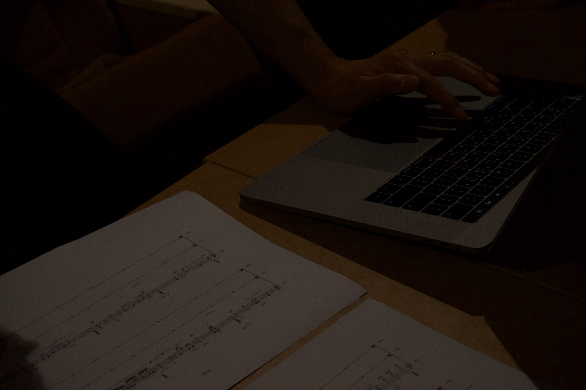
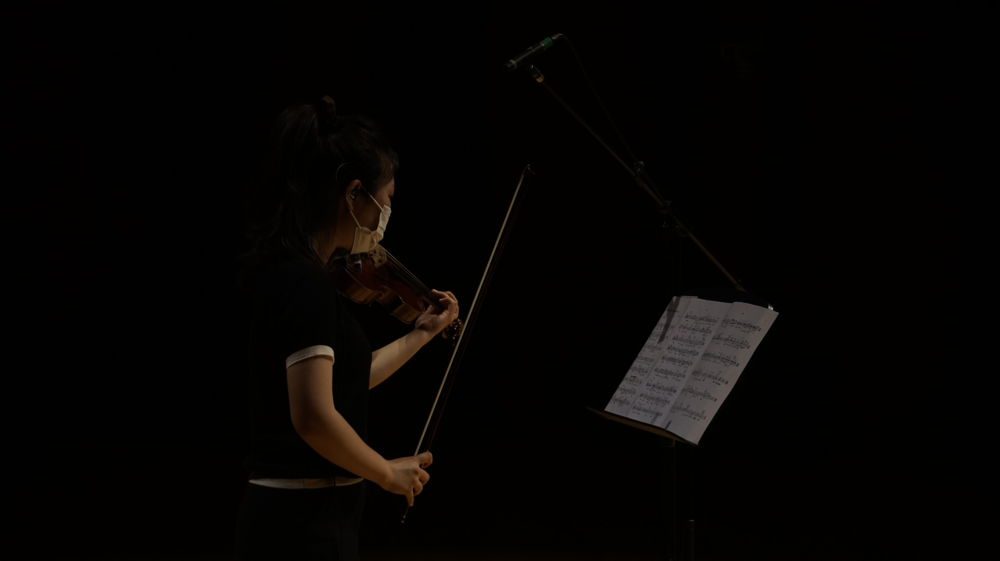
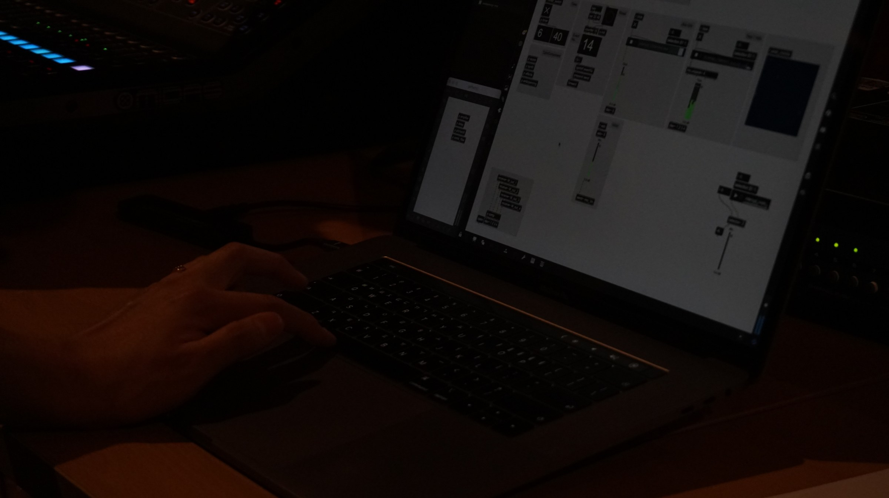

interrupt

 >
>




Movements that try to break out of a set range and notes. The violin moves according to a set flow. However, electronic music causes confusion. In the hands of confusion, the violin technique also constantly changes, and in the midst of chaos, it eventually flows musically.
Electric Disruptions: Violin in Dialogue with Chaos
This piece explores the tension between structure and disruption, tradition and intervention—between the expressive continuity of the violin and the volatile force of electronic sound. The violin begins within a clearly defined range, following a predetermined musical flow. Its gestures are lyrical, directional, and rooted in established technique.
However, the electronics act as an agent of instability. They interrupt, provoke, and distort. Rather than simply accompany the violin, they challenge it, pushing the performer into a space of constant adaptation. As the electronic sounds “strike” or infiltrate the musical texture, the violin responds—not with resistance, but through transformation.
What emerges is a kaleidoscopic shift in violin technique: rapid changes in bowing pressure, articulation, pitch control, and extended methods produce continuous timbral variation. The instrument no longer maintains a singular voice but fragments and reconfigures itself in real time. The electronics, in turn, are tightly synchronized to these changes—sometimes echoing, sometimes fracturing them.
Despite the surrounding confusion, the result is not disintegration but a new kind of musical logic. The chaos becomes structured, the interruptions become essential. The music flows—but through instability, not in spite of it.
Credits
- Composition: Kim EunJun
- Violin: Cha Dream
- Performances:
- 2024 ICMC 'Sound in Motion', Korea
- 2022 KNUA 'MTK043', Seoul
Score Preview
PDF 뷰어를 지원하지 않는 브라우저입니다.